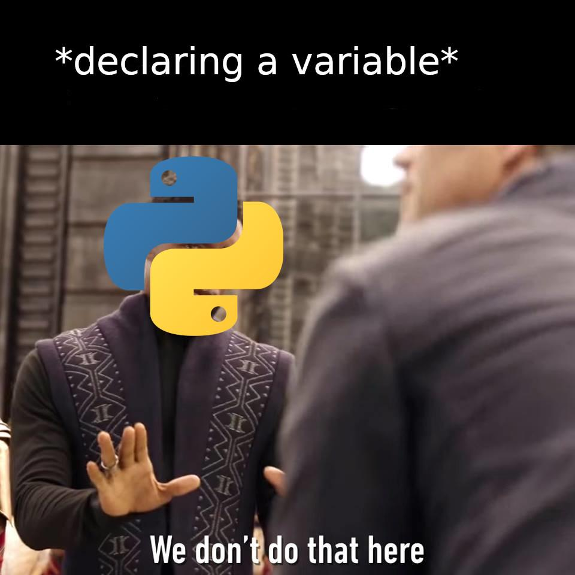
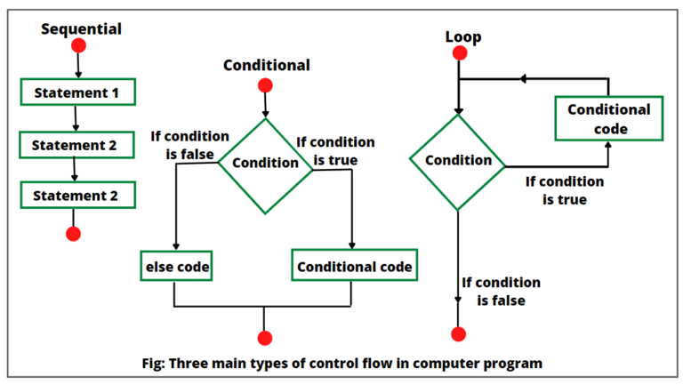
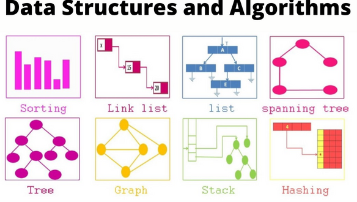
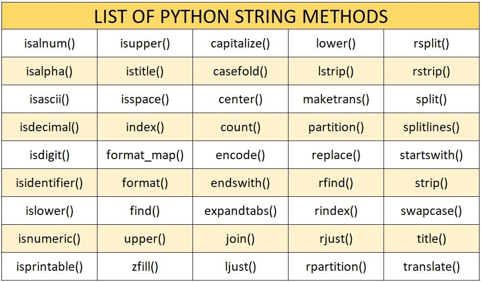

2. Tipos de datos básicos, control de flujo y funciones
Esta va a ser una clase con bastante contenido, so lock inEn la clase de hoy veremos...
¿Qué tipos de variables básicas están disponibles y qué podemos hacer con ellas?
¿Cómo organizar el código en funciones y estructuras de control de flujo?
¿De qué estructuras de datos dispone Python?
Variables en Python
- No hace falta declarar variables antes de usarlas, ni especificar su tipo
- Tipado dinámico
- Podemos usar type() para ver qué tipo tenemos en cada variable
- Formato específico: los nombres de variables no pueden contener espacios. Los únicos caracteres permitidos son los alfanuméricos (A-z, 0-9) y el guión bajo (_)
- No hay constantes como tal, el convenio para escribir variables que no deberían cambiar es en mayúsculas
int x = 5 # Error!
x = 5
x = "test" # Podemos cambiar el tipo de x
type(x) # <class 'str'>
numero pi = 3.1415 # Error!
numero_pi = 3.1415
1numero = 5 # Error!
numero1 = 5
SPEED_OF_LIGHT = 299_792_458 # Constante
Tipos de datos numéricos
- $a \in \mathbb{Z} \rightarrow $ int Al contrario que en otros lenguajes, no hay ningún límite en el tamaño de los enters, pero fuera de $[-2^{63}, 2^{63}]$ las operaciones serán mucho más lentas. Para números grandes podemos usar: x = 10_000_000_000
- $a \in \mathbb{R} \rightarrow $ float La representación es en punto flotante de doble precisión (números máquina $\neq \mathbb{R}$).
- $a \in \mathbb{C} \rightarrow $ complex Se comportan igual que un par de floats, pero podemos usar operaciones de números complejos, Python usa la unidad imaginaria j en vez de i, por ejemplo $a = 3 + 5j$.
Operadores aritméticos
- {+, -, *, /} operaciones usuales
- {//, %} implementan la división entera y el resto
- ** es la exponenciación. También podemos usar la función pow(x, y)
- Todos estos operadores pueden ser combinados con == para operar sobre la variable
x, y, z = 5, 3, 2
print((x + y) * z / 4) # 4.0 type(int/int) = float
print(x // y) # 1 type(int // int) = int
print(x % y) # 2
print(x ** y) # 125
print(pow(1j, 2)) # (-1+0j)
x = 5
x += 1 # x ahora es 6
y = 10**4 # 10000
"Strings"
Una string (o cadena) no es más que una secuencia de carácteres, por ejemplo, una palabra, frase, o línea de un archivo de texto.
x = "Matemáticas " # Comillas simples
y = 'USC' # Comillas dobles
# Si queremos poner comillas dentro de un string, podemos usar el otro tipo
quotes_str = 'se nos acabó el "chollo"'
# Comillas triples para strings multilínea
z = """wow I really love
studying here at the
USC"""

Strings: slicing
Podemos acceder a subcadenas (y a los elementos de muchas otras estructuras de datos) de una string con el operador []. Los índices de strings (y de arrays, listas, ...) están en el rango $[0, len(s)-1]$
x = "Hola"
print(x[0]) # H
print(x[1]) # o
print(x[0], x[1], x[2], x[3]) # H o l a
También podemos usar [:] para especificar un rango de índices
print(x[1:3]) # ol
print(x[:2]) # Ho
print(x[2:]) # la
El slicing en Python es muy flexible, podemos usar índices negativos que empiezan a contar desde el final de la string:
x = "índices negativos"
print(x[-1]) # s (último carácter)
print(x[-2:]) # os (desde el penúltimo hasta el final)
print(x[1:-1]) # ndices negativo (desde el segundo hasta el penúltimo)
Strings: métodos estándar
La librería estándar de Python provee muchos métodos útiles para trabajar con strings:
Esta imagen ni siquiera está completa, por lo que solo veremos algunos de los métodos más útiles, por supuesto la referencia completa está en: docs.python.org
Strings: métodos estándar
Este es un ejemplo de una de las características por las que Python es más apreciado: los nombres de las funciones son intuitivos y se pueden deducir del comportamiento de la función.
ada = "ada lovelace"
# Métodos para cambiar capitalización
print(ada.capitalize()) # Ada lovelace
print(ada.upper()) # ADA LOVELACE
print(ada.title()) # Ada Lovelace
print("C++".lower()) # c++
# Métodos para buscar subcadenas
print(ada.startswith("ada")) # True
print(ada.endswith("lace")) # True
# Para encontrar el primer índice de una subcadena dentro de otra, usamos find
print(ada.find("love")) # 4
# Si no se encuentra, find devuelve -1
print(ada.find("python")) # -1
# Métodos para reemplazar subcadenas
print(ada.replace("lovelace", "hopper")) # ada hopper
print(ada.replace("a", "A")) # AdA lovelAce
# ...y también para eliminar espacios al principio/final
padded = " turbo padded string "
print(padded.strip()) # turbo padded string
print(padded.lstrip()) # turbo padded string
print(padded.rstrip()) # turbo padded string
# Métodos para dividir y unir strings
print(ada.split()) # ["ada", "lovelace"] <-- convierte la string a una lista, estructura que veremos más adelante
print(" ".join(["ada", "lovelace"])) # ada lovelace
# .join() es un método muy interesante, veremos más adelante otros ejemplos como el siguiente:
print(", ".join([str(i) for i in range(10)])) # 0, 1, 2, 3, 4, 5, 6, 7, 8, 9
# Métodos para comprobar si una string es de cierto tipo
print("123".isdigit()) # True
print("abc".isalpha()) # True
print("😶🌫️".isalnum()) # False
print("ABC".islower()) # False
Los métodos se pueden encadenar y se ejecutan en el orden en el que se escriben, por ejemplo:
print(" hola ".strip().capitalize()) # Hola
Strings: "fun" facts
print("instagram\nreels") # instagram
# reels
print("value:\t10") # value: 10
print("hello\"world\"") # hello "world"
print("C:\\Users\\pablo") # C:\Users\pablo
Se pueden usar caracteres de todo tipo en strings!
epic_string = "🐉 传说中的龙在烈焰中飞翔，守护着远古的宝藏 🔥✨"
print(epic_string)
+ y * con
strings:
print("Hola" + " mundo") # Hola mundo
print("Hola" * 3) # HolaHolaHola
(Por razones de eficiencia, seguridad, etc.)
x = "Hola"
x[0] = "h" # Error!
# Cuando "modificamos" una variable con una string,
# solo estamos copiandola y reasignandola a una nueva string
x = x + " mundo"
f-strings
- Útiles para imprimir tablas de contenido, formatear fecha y hora, etc.
- ¡También hacen más sencillo encontrar bugs!
- Sintaxis muy sencilla: f"texto normal {expresión} ..."
- Muchos indicadores de formato adicionales: cheat sheet
x, y, cheese = 2, 3, "we ❤️ cheese"
print(f"La suma de {x} y {y} es {x + y}")
print(f"La longitud de la string es {len(cheese)}")
print(f"El número pi con 3 decimales es {3.141592653589793:.3f}") # 3.142 (usa redondeo)
print(f"La constante de gravitación universal es {6.67430e-11:.2e}") # 6.67e-11
print(f"Hexadecimal: {255:x}, Octal: {255:o}, Binario: {255:b}") # ff, 377, 11111111
# Alinear texto: útil para imprimir tablas
print(f"{'Álbum':<20} {'Año':<10} {'Género':<15}") # Álbum Año Género
print(f"{'OK Computer':<20} {'1997':<10} {'Alternative Rock':<15}") # OK Computer 1997 Alternative Rock
print(f"{'Kid A':<20} {'2000':<10} {'Art Rock':<15}") # Kid A 2000 Art Rock
print(f"{'In Rainbows':<20} {'2007':<10} {'Alternative Rock':<15}") # In Rainbows 2007 Alternative Rock
Un último tipo de datos básico: Booleanos
Los booleanos son un tipo de datos que solo puede tener dos valores: True o False
Se usan principalmente en estructuras de control de flujo y en comparaciones
Un último tipo de datos básico: Booleanos
Los booleanos son un tipo de datos que solo puede tener dos valores: True o False
Se usan principalmente en estructuras de control de flujo y en comparaciones
Booleanos y comparaciones
Por supuesto, podemos comparar strings y otros tipos de datos
Para negar un booleano, usamos not
# Operadores lógicos
print(3.14 != 3.1415) # True
print(not True) # False
print(0 < 1 and 1 < 2) # True
print(0 < 1 < 2) # True
# Comparaciones con strings
print("hola" == "hola") # True
print("hola" == "adiós") # False
print("hola" > "adiós") # True (orden alfabético)
# Hay algunos valores especiales que se pueden interpretar como Verdadero/Falso
print(True == 1) # True
print(False == 0) # True
print(bool("")) # False
print(bool("hola")) # True
Estructuras de datos
Listas
Las listas son una de las estructuras más simples y flexibles del lenguaje, y actúan de forma similar a los arrays de otros lenguajes: lista = [1, "python", [1,3]]
- Colección de elementos ordenada
- Los elementos pueden ser cualquier cosa (incluso otras listas o estructuras)
- Se definen con corchetes y se accede a sus elementos de forma similar a los arrays o vectores de otros lenguajes
# Crear una lista
lista = [1, 1, 2, 3]
# Añadir elementos
lista.append(5)
# Acceder a elementos, mismas reglas que con strings
print(lista[0]) # 1
print(lista[-1]) # 5
# Slicing
print(lista[1:3]) # [1, 2]
Listas
Se pueden añadir elementos con .append() y .insert()
# Append añade un elemento al final
lista = ["mira", "wassap"]
lista.append("bro") # ["mira", "wassap", "bro"]
# Insert se usa para añadir un elemento en una posición concreta
lista.insert(1, "ahora") # ["mira", "ahora", "wassap", "bro"]
Y borrar con del y .pop()
lista = ["audi", "bmw", "mercedes"]
del lista[1]
print(lista) # ["audi", "mercedes"]
Se pueden inicializar de muchas formas:
lista = list(1, 2, 3) # [1, 2, 3]
lista = list(range(10)) # [0, 1, 2, 3, 4, 5, 6, 7, 8, 9]
lista = list("hola") # ['h', 'o', 'l', 'a']
lista = [0] * 10 # [0, 0, 0, 0, 0, 0, 0, 0, 0, 0]
Y podemos usar los condicionales in y not in:
frutas = ["manzana", "banana", "cereza", "uva"]
if "banana" in frutas:
print("Genial! La banana está en la lista de frutas.")
if "kiwi" not in frutas:
print("Cáspita! El kiwi no está en la lista de frutas.")
Listas
Por supuesto, podemos ordenar los elementos:
lista = [3, 1, 4, 1, 5, 9, 2, 6, 5, 3, 5]
lista.sort()
print(lista) # [1, 1, 2, 3, 3, 4, 5, 5, 5, 6, 9]
sms = ["USC Notas", "Lenguaje matemático", "4.9", "Suspenso"]
sms.sort()
print(sms) # ['4.9', 'Lenguaje matemático', 'Suspenso', 'USC Notas'] (orden alfanumérico)
# Pero cuidado con ordenar listas heterogéneas!
sms = ["USC Notas", "Lenguaje matemático", 4.9, "Suspenso"]
sms.sort() # Error!
Y también podemos hacer otras operaciones como invertir el orden:
lista = [3, 1, 4, 1, 5, 9, 2, 6, 5, 3, 5]
lista.reverse()
print(lista) # [5, 3, 5, 6, 2, 9, 5, 1, 4, 1, 3]
Tuplas
Las tuplas son una estructura curiosa, se comportan de forma similar a las listas pero son inmutables: tupla = (1, "python", [1,3])
- Se pueden definir con o sin paréntesis
- Su uso principal: poder declarar varias variables en una sola línea
- También se usan para poder devolver varias variables en una función (más adelante...)
tupla = (1, 1, 2, 3)
print(tupla[0])
print(tupla[-1])
# No se pueden modificar elementos!
tupla[0] = 0 # Error!
# Assignments múltiples (todo esto son tuplas, se podrían escribir con paréntesis)
x, y = 1, 2
x, y = y, x
print(x, y) # 2 1
Sets
Implementa conjuntos de elementos no repetidos sin ordenar (o sea, un conjunto $X$ como los de toda la vida)
La sintaxis para declararlos es conj = {'a', 1, 'b'}
- Unión: $ A \cup B \longleftrightarrow$ a | b
- Intersección: $ A \cap B \longleftrightarrow$ a & b
- Diferencia: $ A \setminus B \longleftrightarrow$ a \ b
- Diferencia simétrica: $ (A \setminus B) \cup (B \setminus A) \longleftrightarrow$ a ^ b
También podemos añadir elementos con .add() y borrarlos con .remove(). La sintaxis es igual que para listas.
primes = {2, 3, 5, 7, 11}
odds = {1, 3, 5, 7, 9, 11}
print(primes | odds) # {1, 2, 3, 5, 7, 9, 11}
print(primes & odds) # {3, 5, 7, 11}
print(primes - odds) # {2}
print(primes ^ odds) # {1, 2, 9}
Diccionarios
Un diccionario $d$ implementa una aplicación (mutable) entre un conjunto de
keys $K$ y uno de valores $V$,
$d: K \to V$.
Son mutables, ordenados y no permiten tener varios valores para una misma key
# Crear un diccionario
datos = {"nombre": "Evariste", "apellido": "Galois", "edad": 20}
# Acceder a elementos
print(datos["nombre"]) # Evariste
# Añadir y modificar elementos es muy sencillo
datos["edad"] = 22
datos["email"] = "evariste.galois@rai.usc.es"
# Podemos eliminar con del al igual que en listas
del datos["email"]
# O eliminar todo el diccionario con .clear() (esto también funciona para listas y demás)
datos.clear()

Diccionarios
Es muy común usar diccionarios junto a listas para representar listas de información estructurada:
# Lista de estudiantes con sus datos
estudiantes = [
{"nombre": "Pablo", "apellido": "Diaz", "edad": 23},
{"nombre": "Evariste", "apellido": "Galois", "edad": 20},
{"nombre": "Ada", "apellido": "Byron", "edad": 30}
]
# Podemos indexar la lista y el diccionario a la vez
print(estudiantes[0]["nombre"]) # Pablo
O usar diccionarios encadenados para representar estructuras más complejas (siguiendo la misma sintaxis que el formato JSON):
# Estructura de información más complicada
lenguajes = {
"C++": {"creador": "Bjarne Stroustrup", "año": 1985, "caracteristicas": ["rápido", "complicado"]},
"Python": {"creador": "Guido van Rossum", "año": 1991, "caracteristicas": ["fácil", "versátil"]},
"Rust": {"creador": "Graydon Hoare", "año": 2010, "caracteristicas": ["seguro", "rápido"]}
}
Estructuras de datos
En todas estas estructuras de datos podemos ver si un elemento está dentro o no usando in y not in.
# Listas
lista = [1, 2, 3, 4, 5]
print(3 in lista) # True
print(6 not in lista) # True
# Sets
conjunto = {1, 2, 3, 4, 5}
print(3 in conjunto) # True
# Diccionarios
datos = {"nombre": "Evariste", "apellido": "Galois", "edad": 20}
print("nombre" in datos) # True
Control de flujo
Condicionales
Los condicionales en Python siguen la estructura if ... elif ... else
tiempo = "lluvia"
if tiempo == "lluvia":
print("No sé si ir a Supertopo")
elif tiempo == "sol":
print("Voy a clase")
elif tiempo == "tormenta":
print("Va a ir a Supertopo su padre")
else:
print("No sé qué tiempo hace")
Condicionales
Los condicionales en Python siguen la estructura if ... elif ... else
tiempo = "sol"
if tiempo == "lluvia":
print("No sé si ir a Supertopo")
elif tiempo == "sol":
print("Voy a clase")
elif tiempo == "tormenta":
print("Va a ir a Supertopo su padre")
else:
print("No sé qué tiempo hace")
Condicionales
Los condicionales en Python siguen la estructura if ... elif ... else
tiempo = "tormenta"
if tiempo == "lluvia":
print("No sé si ir a Supertopo")
elif tiempo == "sol":
print("Voy a clase")
elif tiempo == "tormenta":
print("Va a ir a Supertopo su padre")
else:
print("No sé qué tiempo hace")
Condicionales
Los condicionales en Python siguen la estructura if ... elif ... else
tiempo = "tornado"
if tiempo == "lluvia":
print("No sé si ir a Supertopo")
elif tiempo == "sol":
print("Voy a clase")
elif tiempo == "tormenta":
print("Va a ir a Supertopo su padre")
else:
print("No sé qué tiempo hace")
El operador ternario
- En Python podemos simplificar condicionales sencillos usando el operador ternario: valor_si_cierto if condicion else valor_si_falso:
- No suele ser buena idea abusar de ellos para cosas complicadas, ya que dificultan la lectura del programa
# Sintaxis: valor_si_cierto if condición else valor_si_falso
edad = 20
print("Puedes beber" if edad >= 18 else "No puedes beber")
n = 2903
print("par" if n % 2 == 0 else "impar")
Una aclaración importante: = es para asignar un valor a una variable, mientras que == es para hacer comparaciones!
Indentación
En Python, la indentación es obligatoria y se usa para delimitar bloques de código.
if x == 1:
print("x es 1") # Error de indentación
Puede parecer una tontería pero el programa no compila si no pones las tabulaciones bien
Si esto es buena decisión de diseño o son mejores los curly braces { } es un debate milenario
Por supuesto tiene que haber alguna forma de indicar jerarquía entre bloques de códigos una vez introduces condicionales, para evitar ambigüedad (problema del dangling else)
if x > 0:
if y > 0:
print("both positive")
else:
print("at least one non-positive") # de cuál if es este else?
Bucles
- En Python existen dos tipos de bucles: for y while
- Los búcles for funcionan distinto a otros lenguajes, solo iteran sobre estructuras de datos
- Con la estructura range(start, end, skip) podemos implementar bucles for como los de otros lenguajes
- Podemos usar break para salir de un bucle
- Podemos usar continue para saltar a la siguiente iteración
# Bucles sobre una lista
frutas = ["manzana", "platano", "naranja", "limón", "kiwi"]
for fruta in frutas:
if fruta == "platano":
continue
print(fruta)
if fruta == "limón":
break
# Bucles con range
for i in range(5):
print(i)
for i in range(1, 11, 2):
print(i)
Bucles for
Hay 2 formas de iterar sobre listas, depende de si necesitamos los índices o no:
cats = ["sebastian", "supreme cat", "frozone"]
for cat in cats:
print(f"{cat.title()} es mi gato favorito")
# Si necesitamos los índices de la lista, usamos enumerate()
for i, cat in enumerate(cats):
print(f"{cat.title()} es el gato número {i+1}")
También podemos iterar sobre otras estructuras de datos
# Sobre diccionarios
datos = {"nombre": "Evariste",
"apellido": "Galois",
"edad": 20}
for key, value in datos.items():
print(f"{key}: {value}")
for key in datos.keys():
print(key)
for value in datos.values():
print(value)
# Sobre sets
primes = {2, 3, 5, 7, 11}
for i, p in enumerate(primes):
print(p, "es el primero número #", i)
Bucles while
Los bucles while se ejecutan mientras una condición sea verdadera
# Bucle infinito
while True:
pass # La palabra "pass" se usa para indicar no hacer nada, pero manteniendo la indentación de Python
# Bucle con condición
x = 0
while x < 10:
print(x)
x += 1
List comprehensions
Una manera muy útil de crear listas es usando list comprehensions, en las que se itera sobre una secuencia existente y se aplica una función y/o un filtro a cada elemento de la secuencia.
mi_lista = [expresion for elemento in iterable if condición]
# Crear una lista de cuadrados de números del 0 al 9
cuadrados = []
for n in range(10):
cuadrados.append(n**2)
print(cuadrados) # [0, 1, 4, 9, 16, 25, 36, 49, 64, 81]
# Crear una lista de números pares del 0 al 9
pares = []
for n in range(10):
if n % 2 == 0:
pares.append(n)
print(pares) # [0, 2, 4, 6, 8]
# Crear una lista de cuadrados de números del 0 al 9
cuadrados = [n**2 for n in range(10)]
print(cuadrados) # [0, 1, 4, 9, 16, 25, 36, 49, 64, 81]
# Crear una lista de números pares del 0 al 9
pares = [n for n in range(10) if x % 2 == 0]
print(pares) # [0, 2, 4, 6, 8]
List comprehensions
Una manera muy útil de crear listas es usando list comprehensions, en las que se itera sobre una secuencia existente y se aplica una función y/o un filtro a cada elemento de la secuencia.
mi_lista = [expresion for elemento in iterable if condición]
bebidas = ["agua", "café", "té", "coca cola"]
nuevas_bebidas = []
for bebida in bebidas:
if bebida != "agua":
nuevas_bebidas.append(bebida)
else:
nuevas_bebidas.append("agua con gas")
print(nuevas_bebidas)
# ['agua con gas', 'café', 'té', 'coca cola']
bebidas = ["agua", "café", "té", "coca cola"]
nuevas_bebidas = ["agua con gas" if bebida == "agua"
else bebida for bebida in bebidas]
print(nuevas_bebidas)
# ['agua con gas', 'café', 'té', 'coca cola']
List comprehensions
Una manera muy útil de crear listas es usando list comprehensions, en las que se itera sobre una secuencia existente y se aplica una función y/o un filtro a cada elemento de la secuencia.
mi_lista = [expresion for elemento in iterable if condición]
duplas = []
for x in range(10):
for y in range(10):
duplas.append((x, y))
print(duplas) # [(0, 0), (0, 1), (0, 2), ... , (9, 8), (9, 9)]
duplas = [(x, y) for x in range(10) for y in range(10)]
print(duplas) # [(0, 0), (0, 1), (0, 2), ... , (9, 8), (9, 9)]
Funciones
Funciones
Las funciones en Python son bloques de código reutilizables que se invocan con cierto número de argumentos y devuelven un valor
# Definición
def nombre_funcion(argumento1, argumento2, ...):
# Código de la función...
return valor
# Invocación
valor = nombre_funcion(valor1, valor2)
def imprimir_norma_L_vector(x, y, z, L):
norm = (x**L + y**L + z**L)**(1/L)
print(f"La {L}-norma del vector ({x}, {y}, {z}) es {norm}")
imprimir_norma_L_vector(1, 1, 1, 1) # 3.0
imprimir_norma_L_vector(1, 1, 1, 2) # 1.7320508075688772
def factorial(x):
fact = 1
for i in range(1, x + 1):
fact *= i
return fact
def coef_combinatorio(x, y):
if x < y:
return 0
return factorial(x) // (factorial(y) * factorial(x - y))
print(coef_combinatorio(5, 2)) # 10
def volumen_cilindro(altura, radio):
return 3.14159 * radio**2 * altura
volumen_cilindro(2, 1) # 6.28318
volumen_cilindro(radio=1, altura=2) # 6.28318
volumen_cilindro(1, 2) # 12.56636
- El propósito principal de una función es reutilizar código ya hecho.
- Podemos tener funciones de cualquier tamaño, pero es recomendable que no sean demasiado largas, y crear programas a partir de la composición de funciones pequeñas.
- Al contrario que en otros lenguajes de programación, no hace falta especificar el tipo de los argumentos ni el del valor de retorno
- Podemos concretar el argumento que pasamos usando fun(arg="value"). Esto sobreescribe el orden por defecto!
Argumentos con valor por defecto
Al declarar una función, podemos asignar valores por defecto a los argumentos, de forma que si no se pasan, se usen esos valores. Sin embargo, debemos tener en cuenta lo siguiente:
- Deben escribirse siempre tras todos los argumentos sin valor por defecto
- Usar objetos mutables (como listas) como valor por defecto no es buena idea, ya que se comparten a lo largo de varias llamadas
def saludar(nombre, saludo="Hola"):
print(f"{saludo}, {nombre}!")
saludar("Pablo") # Hola, Pablo!
saludar("Evariste Galois", "Bonjour") # Bonjour, Evariste Galois!
def append_to_list(value, lista=[]):
lista.append(value)
return lista
print(append_to_list(1)) # [1]
print(append_to_list(2)) # [1, 2] (!!!)
Argumentos variables
Existen dos formas de pasar un número variable de argumentos a una función:
- Argumentos posicionales: se pasan con un asterisco * y se recogen en una tupla. Normalmente, se denotan como *args
- Argumentos clave-valor o de diccionario: se pasan con dos asteriscos ** y se recogen en un diccionario. Normalmente, se denotan como **kwargs
- Es recomendable poner *args al final de la lista de argumentos. Si no lo hacemos, solo podemos pasar el resto de argumentos mediante nombre=valor.
def variable_arguments(*args, **kwargs):
# Extraemos los argumentos de esta forma
for arg in args:
print(arg)
for key, value in kwargs.items():
print(f"{key}: {value}")
# Y los pasamos como...
variable_arguments(1, 2, 3, nombre="Pablo", edad=23)
Ejercicios (we are sorry)
- Usa f-strings para imprimir el siguiente diccionario con el formato dado:
- Crea un diccionario que contenga la asignación $n \to n^2$ para los $100$ primeros números naturales. Encuentra la suma de los cuadrados de los $100$ primeros números naturales usando este diccionario.
- Imprime la Secuencia de Collatz para el número $n=127$.
- Encuentra si el número $n = 53239$ es primo, para ello, puedes usar un bucle y ver si es divisible para alguno de los números $\left[2, \dots, \sqrt{n}\right]$.
- Crea una lista cuyos elementos sean el conjunto $P_{10001}$ de todos los números primos entre $2$ y $10001$ e imprimela.
- Dadas 2 matrices cuadradas $A, B \in \mathcal{M}(n\times n)$, implementa la multiplicación de matrices usando 3 bucles anidados. Puedes comprobar si funciona usando las siguientes matrices:
estudiante = {"nombre": "Lucía", "edad": 21, "carrera": "Matemáticas", "promedio": 8.75}
# IMPRIMIR COMO: Lucía tiene 21 años, estudia Matemáticas y tiene un promedio de 8.75.
A = [[1, 2], [3, 4]]
B = [[5, 6], [7, 8]]
# Deberías obtener [[19, 22], [43, 50]]
Soluciones a los ejercicios
¡Intentad hacerlos antes de descargarlas!
- Ejercicio 1 (f-strings)
- Ejercicio 2 (Diccionarios)
- Ejercicio 3 (Secuencia de Collatz)
- Ejercicio 4 (Comprobador de primos)
- Ejercicio 5 (Criba de primos)
- Ejercicio 6 (Multiplicación de matrices)
- Ejercicio repaso clase 1 (Números perfectos)